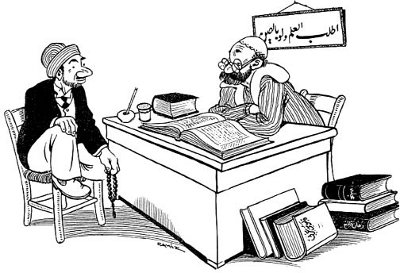

Onların İlmi!

– Terimsiz, lûgatsiz, sade halk dili ile konuşmak yaygınlaşırsa
meramımızı daha kolay anlatacakmışız...
– Öyle ama hazret, bu sefer de herkese âlim olduğumuzu anlatamıyacağız!
Ramiz Gökçe, Akbaba, 27 Eylül 1934, S. 39.